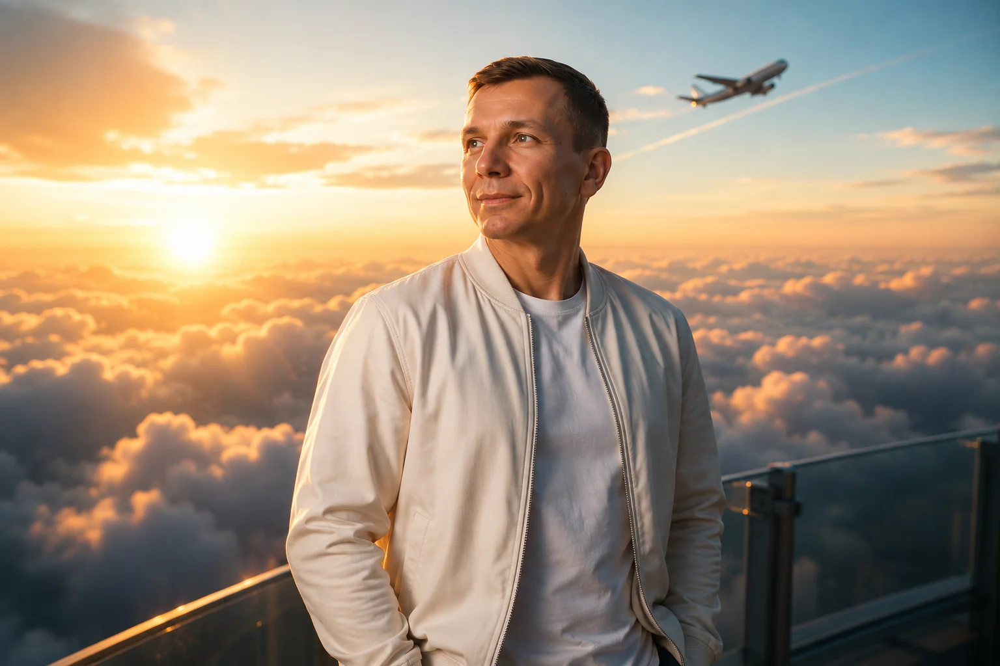

Serezha NeL
Все концептыЦифровые задачи без лишнего шумаСначала
Сначала
разберёмся.
Ты приносишь идею или проблему. Я нахожу рабочий путь, собираю решение и проверяю его на практике.

Ты приносишь идею или проблему. Я нахожу рабочий путь, собираю решение и проверяю его на практике.
